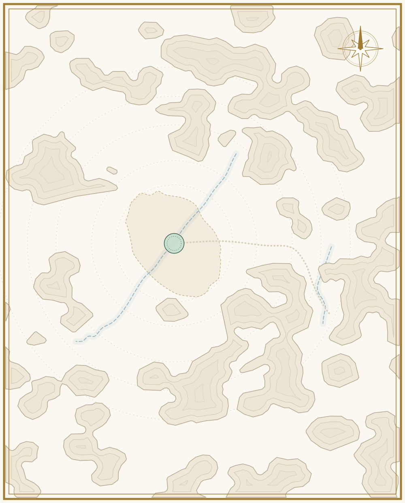

مزدلفة
١٩
الكعبة
والصفا ودار الأرقم
٧
شعب أبي طالب
٢
غار حراء
جبل النور
عام الحزن
عمره ٥٠
٢
غار ثور
٤
منى
والعقبة
حجة الوداع
عرفات · عمره ٦٢
عام الحزن
عمره ٥٠ سنة · الحجون
فتح
المنطقة
مكة
السيرة النبوية · ٣٦ حدثًا
كل الأعمار
١٦٢ حدثًا · اسحب لاختيار عمر
الطفولة
الصبا
الشباب
الكهولة
المولد
الزواج
الوحي
الهجرة
الوفاة
١٢
غير محدد